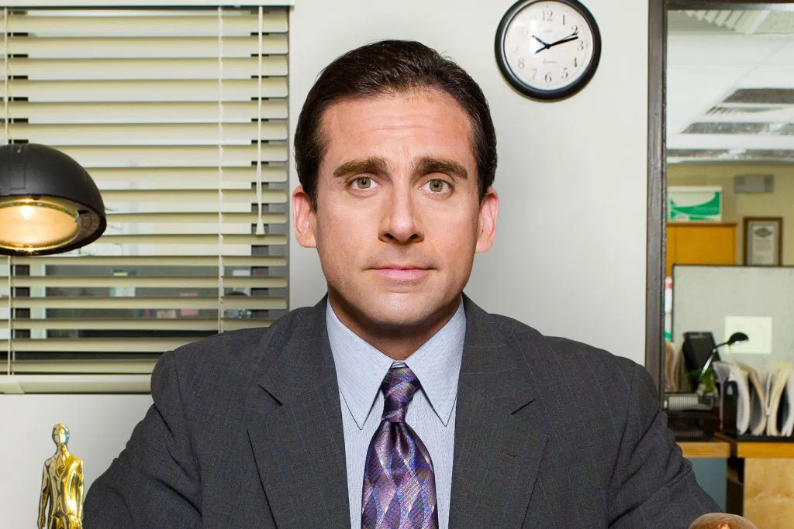
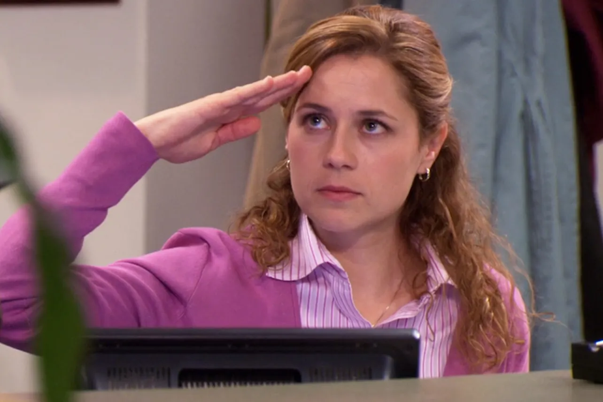
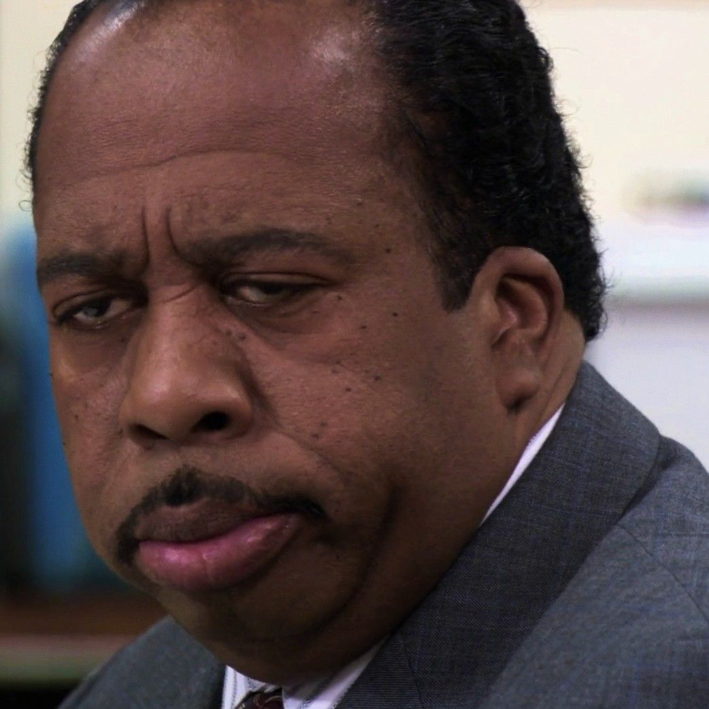
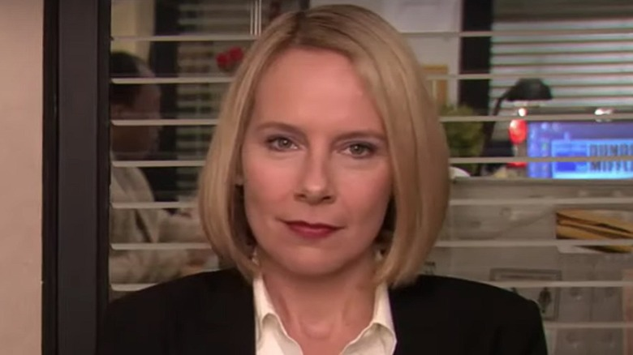

Michael Scott
The regional manager. Funny, awkward, and always trying to be the best boss.
Jim Halpert
A salesman known for his pranks and relaxed personality.

Pam Beesly
The receptionist who becomes a salesperson. Kind and creative.

Dwight Schrute
Assistant to the Regional Manager. Intense and rule-obsessed.

Stanley Hudson
Loves pretzels and hates meetings. Always serious.

Kelly Kapoor
Loves drama, gossip, and attention.

Ryan Howard
The temp who becomes ambitious and complicated.

Holly Flax
The HR representative and Michael's soulmate. Sweet, funny, and one of the few who truly understands him.